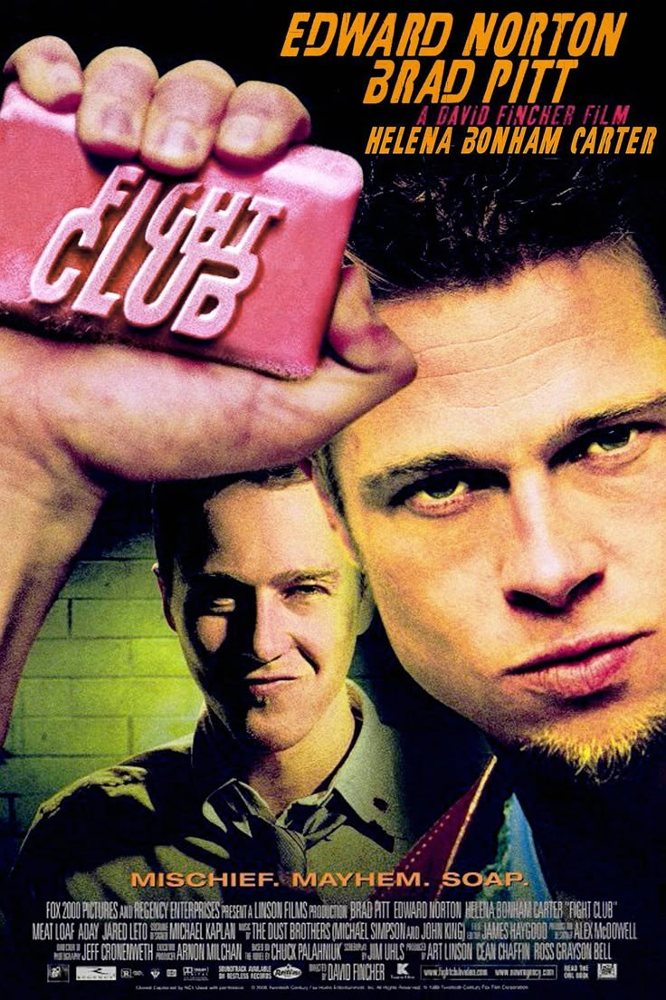

Un empleado de oficina anónimo, sumido en el insomnio y la alienación de su vida moderna, encuentra un escape grotesco cuando conoce a Tyler Durden, un carismático vendedor de jabón con una filosofía peligrosa. Juntos, fundan un club clandestino donde hombres frustrados descargan su ira a golpes. Lo que comienza como una terapia subterránea y liberadora, pronto evoluciona hacia algo mucho más grande y oscuro: un proyecto anarquista que amenaza con desestabilizar los cimientos de la sociedad consumista.
Pero nada es lo que parece. En un torbellino de caos, secretos y revelaciones explosivas, el narrador se verá arrastrado a una espiral de la que quizá no pueda escapar. La primera regla del Fight Club es: no hables sobre Fight Club. La segunda regla del Fight Club es: NO HABLES SOBRE FIGHT CLUB.
Personajes principales:
Edward Norton
Brad Pitt
Helena Bonham Carter
Meat Loaf

Valoración del portal: ★★★★★ (5/5) - Obra Maestra del Cine Moderno
Pokémon: Lucario y el misterio de Mew
Título Original: Pokémon: Lucario and the Mystery of Mew
Año: 2005
Director: Kunihiko Yuyama
Género: Animación, Aventura, Fantasía
En el pasado, el valiente Pokémon Lucario y su maestro, Sir Aaron, evitaron una gran guerra usando sus poderes. Sin embargo, Aaron desapareció misteriosamente, dejando a Lucario sellado dentro de su cetro por razones desconocidas. Siglos después, Ash, Pikachu y sus amigos asisten a la Fiesta de la Ona en el Reino de Rota, donde Ash es elegido como el "Guerrero del Aura", despertando accidentalmente a Lucario de su largo sueño.
Juntos, se embarcan en una épica aventura cuando el Pokémon legendario Mew secuestra a Pikachu y a Meowth, llevándolos al misterioso Árbol del Mundo. Para rescatar a sus amigos, Ash y Lucario deberán aprender a confiar el uno en el otro mientras desentrañan el misterio que rodea la desaparición de Sir Aaron y descubren la verdad sobre el poder del Aura.
Valoración del portal: ★★★★★ (4.5/5) - Una joya imprescindible para cualquier fan
Título Original: How to Train Your Dragon
Año: 2010
Directores: Chris Sanders, Dean DeBlois
Género: Animación, Aventura, Fantasía
Cómo Entrenar a tu dragón
En la isla de Berk, un pueblo vikingo donde luchar contra dragones es una tradición, Hipo Horrendo Abadejo III es un adolescente torpe y poco convencional que no encaja con las expectativas de su pueblo, especialmente con las de su padre, el poderoso jefe Stoick. Mientras todos se dedican a cazar dragones, Hipo solo quiere demostrar que puede ser un guerrero como los demás.
Todo cambia cuando, durante un ataque, Hipo derriba a un raro y veloz dragón de la especie Furia Nocturna, pero en lugar de matarlo, decide liberarlo y lo llama Desdentao. A través de esta amistad prohibida, Hipo descubre que los dragones no son las bestias feroces que todos creen, y que quizá la paz entre vikingos y dragones sea posible.
Valoración del portal: ★★★★★ (5/5) - Obra Maestra de la Animación Moderna